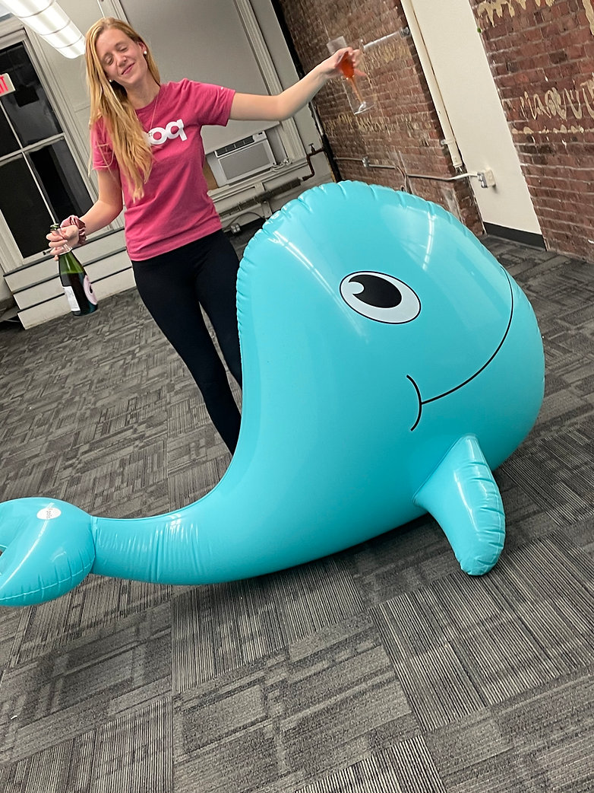

A Guide to Getting Acquired During A Pandemic
Because Even Though One-Size Does Not Fit All, I'm Going to Share My Learnings Anyways and You Can't Stop Me
Last month we announced my company's acquisition. M&A announcements like ours sound amazing and serendipitous: A large company met a small startup, it was a match made in heaven, and now they are living happily ever after like Cinderella and her unnamed Prince. But that's not how merger and acquisition (M&A) processes actually go.
© Kendall Tucker 2021 because I am very good at photoshop.
Selling my company was a long and arduous process. To continue the Disney analogies, it was like being the old guy in Up. I was fairly burned out and suddenly my house was caterwauling around attached to a ton of balloons and I needed to find a good landing spot for it.
I was surprised when I set out to sell that there were very few guides to running an M&A process. Like raising venture, selling your company is a combination of sales pipeline and multi-player negotiation. Ever since I sold, founders have been reaching out asking how I did it (and why!) so I decided to write an inside scoop guide to help others in their journeys.
So here are my 12-steps to successfully selling your company:
Step 1: Decide to sell
Deciding to sell is arguably the most challenging part of your journey. It can be heartbreaking. Your startup is your baby, but it's your job as the founder to take care of your team and your investors when the time is right. So why did I decide to sell? My company was growing extremely fast pre-covid. We'd gone from approximately $20k to $250k of monthly revenue in our first year of doing corporate sales. The problem was that we were an in-person sales company. Suddenly, when Shelter-in-Place orders hit in February last year, everything ground to a halt.
We could have continued going door-to-door but I did not want to be the company delivering covid in cute pink t-shirts. We pivoted a few times to sustain our team and had some revenue coming in, but I wasn't enthusiastic enough about our pivots to keep building. More importantly, the fear was that if we raised more money at a lower valuation, I would dilute our investors and myself too much for it to be worth continuing.
So when a potential acquirer came calling in the summer, I took the call.
Step 2: Determine "who" is most likely to buy you
Before getting in too deep with the company that wanted to buy us, I knew that we needed to assemble a competitive process. I talk to so many founders who get one acquisition offer and then don't shop it around. This is crazy! That's like only meeting one man in your life and assuming that he's the one you want to marry. You need your process to be competitive to get a decent exit (unless you're huge and killing it in which case consider a SPAC).
Before making a list of potential acquirers, start with a list of verticals that might want to acquire the tech, team, recurring revenue, audience or client list that you've built.
In our case we were an in-person sales technology company. We had 4 potential groups of companies that might want to buy us:
- Our clients (duh!)
- Our competitors
- Large marketing companies that wanted to build more personal relationships with their consumers
- Big tech co's (these were our safety schools, i.e. our acquihire opportunities)
Step 3: Build "sales" materials
Similar to a fundraising deck, you will want a short salesy deck that tells potential acquirers who you are and why they should buy you. Think of this as your tinder bio, it should be short, sweet and clear about what you are looking for.
Our deck had 5 slides all with metrics reflecting our strongest attributes:
- Company Overview
- Technology
- Data
- Team
- Why working together might make sense (this was customized for every potential acquirer)
Also similar to a fundraise, you will need to compile high-level past financials + a projection of how much money you could make working together (this will come in handy in the negotiation phase!).
Step 4: Make a list of potential acquirers
Based on the verticals you decided on in step two, make a list of potential acquirers. We looked for top company lists and focused on organizations with the most revenue that hadn't done layoffs during covid.
Then we trolled Linkedin to see who in our network might be able to make an introduction to our potential acquirers' CEOs, CFOs or CROs (we were a sales technology company so this was the highest job title that was relevant to our biz).
Step 5: Start getting introductions
Here is an example email we sent to an introducer:
Hi [Name],
Thanks for connecting today. As discussed, it would be great to be connected with [Name] at [Company] to discuss Knoq and the process we're going through right now. I wouldn't have expected to be in an M&A process right now of course, but given the interest, I want to be thoughtful in how we proceed.
Here is a blurb you can forward: Knoq is a sales technology company that started in the door-to-door space. They work with companies like Google Fiber (telecommunications), Inspire Energy (clean energy), Clearway Energy (solar), Fluent (home security) and Orkin (pest control). Their technology has been used to have over 6 million sales conversations and they have built a data platform that helps door-to-door sales groups transition to digital, phones and direct mail outreach. Their data includes phone numbers, addresses, verified emails and algorithms that predict behavioral information and psychographic indicators.
Best wishes,
Kendall
Step 6: Initial Conversations
Your first call with potential acquirers will generally be scheduled for 30 minutes. This is a quick get-to-know-you chat where you can pitch yourself, your company and what you're looking for in an exit opportunity.
If the person you're talking to is interested, they'll schedule another call right away to see your technology or talk with more people on your team. This stage of the M&A process moves fast and it's important to keep potential acquirers feeling FOMO (fear of missing out). Doing this without lying is a delicate process. When acquirers ask how far along you are, you can say things like "we just started this process but there seems to be a lot of interest."
For us there was one company that led the charge so we were able to say, "we just started this process but one company has been pushing us fast. We want the best outcome, though, so we'll take the time necessary to get to know you."
After the first conversation, ask for an NDA.
Step 7: M&A NDAs
If you're talking to your clients about buying your company, you probably already have NDA's in place with them. NDA's for M&A are a different animal. When you go through an M&A process, you are showing your biggest competitors your technology, your customer books and the rest of your secrets.
Get a new NDA in place before the second conversation and definitely before any diligence. M&A NDAs protect potential acquirers from reverse engineering your tech and stealing your team. Can you imagine starting to go through this process and then every one of your competitors starts messaging your engineers saying "your CEO is selling come work for us"? Disaster.
Step 8: Tech Demo (or another type of deep dive)
For us, most of our second conversations consisted of a tech demo and a deep dive brainstorm on how we could work together. These meetings generally took 1-2 hours and we would seed our technology with their data/use case if we could.
Our team was used to doing tech demos so these went smoothly and we'd get folks pumped about what working together might look like.
If your company isn't tech heavy this might be a deep dive into your production process, your marketing arm or your customer book. To get a good multiple, you need to prove in this conversation why what you're doing is defensible and will make the acquirer a lot of money.
Step 9: Pilot
Most of our customers had been as hurt by covid as we had, so they weren't serious contenders in our M&A process. Therefore our potential acquirers hadn't used our tech before and they were excited to give it a whirl. The first group that had contacted us we let do a pilot for free, but it was a lot of work, and we had a fair number of groups interested, so for all the subsequent pilots, we charged our standard pilot rate: $10k upfront.
You of course don't need to do pilots, but it helped us prove how unique and valuable our tech was. This dragged out our acquisition process but it showed potential acquirers that we weren't looking for an acquihire, instead we were a serious tech company looking for a worthwhile deal.

My VP of Engineering when I told him we were doing another pilot
Step 10: Letter of Intent (LOI)
Don't let a process go on for too long before asking for an LOI. An LOI is kind of like an engagement ring on the Bachelor. It signals that a company is serious about you and it aligns you on baseline numbers to negotiate off of, but it isn't marriage yet.
I didn't let the companies do any diligence beyond what's listed above before the LOI stage because all of this was taking a ton of my time. Once we got our first LOI, we informed the companies we'd already spoken to once or twice and it lit a fire under their butts with a bit of FOMO to speed along the process.
Note: We did not share the contents of our LOIs amongst companies:
- Because NDA's
- Because we wanted to see how much each company valued us independently
Step 11: Negotiate
Negotiations are tough but they can also be really fun. Remember not to take things personally and to shift your mindset from winning or losing to collaborating with the potential acquirers to find the best outcomes for both of you.
Be creative during the negotiation! Everyone thinks about valuations but if the acquirer has hit their valuation ceiling, can they do an earnout? Can they retain your full team? Can they feed you champagne and caviar on a vacation yacht? (just kidding the last one is useless)
A negotiation process goes well if there is a sense of urgency but not so much that people think you're desperate. Follow up every few days and as terms improve amongst your groups, ask the other companies what they can do to match them. Remember at the end you will be "marrying" one of these groups so don't burn too many bridges you don't have to.
Step 12: Sign the LOI and then diligence
Signing the LOI means you've agreed on top line terms and you will enter a period of exclusivity. Generally this gives the acquirer 30-60 days to do as much diligence on you as they can and for you to decide on the more minute terms. Some bad acting acquirers use this period to try and reneg on top-line terms. I've heard horror stories of acquirers saying "this option pool wasn't set up properly so we're gonna deduct a million off the purchase price" and rubbish like that.
Lots of founders say this is the worst step, but my acquirer was cool and this step was fine. They definitely wanted to see all our documents and I mean all our documents. I had to do a lot of searching in old files to make sure they knew everything, but we got through diligence in 60 days. If you haven't already, you should tell your investors about the pending acquisition at this point.
Step 13: Sign the final documents and waltz into big company life
This is the moment where all the good will you've built up amongst your team and your investors (by being honest and kind and a generally good human I hope!) matters. In a very short space of time you will tell your team about the acquisition and they will need to sign documents.
My team had about three days to sign closing docs and their new employment letters. This sucks but generally can't be avoided because the team can't know earlier due to team morale and NDAs.
Similarly your largest investors can certainly red-line acquisition docs, but any investors besides the biggest will need to trust you as a founder and know that you negotiated with their best interest top of mind.
Once you get all the signatures, congratulations! You're done. Now work for a few years and then do it again. Building something valuable is a huge deal and I'm proud of you for making it this far.

The day we signed I had to drink alone cause #covid
Traps to Avoid
- Never lie! If potential acquirers ask how many other companies are in the process, say "a bunch seem interested but I don't want to share the number". If they ask what other offers you've gotten, say "I only started discussions last week but so far enthusiasm feels high". Never say you have an LOI if you don't. It is stupid because if they find out you're screwed and even if they don't, you aren't starting your relationship from a position of trust.
- The "dating" pool: You want groups going through the M&A process simultaneously. Otherwise, you won't be able to negotiate the groups against each other. Just like in dating, you need to know your options to determine your worth.
- You need enough cash in the bank to run a full M&A process! The first offer we got was for less money than we had in the bank. They thought we were dead-on-arrival and they could just wait us out until we accepted their offer. Spoiler alert! They were wrong. Our entire process took 6 months from start to signing on the dotted line. Making a list and getting our docs in order took about a month, talking to co's who were interested and doing pilots took about 3 months and then diligence was 60 days. I've had friends do it in 3 months for less great exits and friends do it in 18 months for phenomenal exits so there is a big range.
Thank Yous
Tons of people helped me throughout this process. My VC's made introductions, my board was supportive and my team were beasts, continuing to crank out work while we negotiated with all our offerers. One person who helped me early on is my friend Bilal, who had written but not yet published his M&A overview guide that became my bible throughout this process. My journey was different than his, so I'm linking to it here and you will see that we have many similarities but also differences as well. Thanks to all of you and to those reading this now.
Back to Home